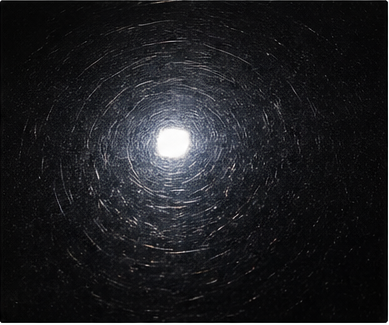
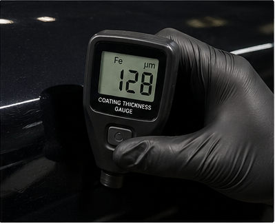
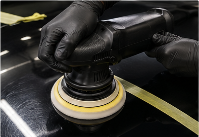
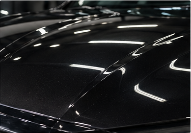
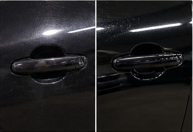

La corrección de pintura automotriz es uno de los procesos más técnicos dentro del detailing exterior. Aunque muchas personas lo llaman simplemente pulido de autos, en realidad se trata de una intervención controlada sobre la capa transparente o barniz del vehículo. Su objetivo no es únicamente aumentar el brillo, sino reducir defectos superficiales, mejorar la reflexión de la luz y recuperar profundidad visual sin comprometer el espesor de la laca.
Contenido del artículo
- Capítulo 1: Qué es corrección de pintura
- Capítulo 2: Diferencia entre pulido y corrección de pintura
- Capítulo 3: Descontaminación y preparación de la superficie
- Capítulo 4: Medición de espesor y seguridad del barniz
- Capítulo 5: Pulido orbital, revoluciones y control térmico
- Capítulo 6: Resultados, precios y mantenimiento preventivo
Capítulo 1: Qué es Corrección de Pintura
Para responder con precisión a la pregunta “qué es corrección de pintura”, hay que partir de la física de la superficie. La pintura de un vehículo moderno normalmente está compuesta por una base de color y una capa transparente llamada barniz o clear coat. Esta capa exterior recibe la mayor parte del desgaste: lavados incorrectos, polvo, lluvia ácida, excremento de aves, contaminación férrica, marcas circulares, rayas finas y oxidación superficial.
Por eso, cuando se habla de qué es corrección de pintura automotriz, no se trata de pintar nuevamente el auto ni de cubrir defectos con ceras temporales. La corrección consiste en nivelar de forma controlada una cantidad mínima de barniz para disminuir defectos ópticos. Al reducir los microarañazos, la luz deja de dispersarse en múltiples direcciones y vuelve a reflejarse de manera más uniforme.
Swirls, rayas finas y reflexión difusa
Los swirls son marcas circulares muy finas que suelen aparecer por lavados agresivos, esponjas contaminadas, secado incorrecto o fricción con polvo. Aunque individualmente son pequeños, cuando se acumulan generan una especie de velo sobre la pintura. Ese velo reduce profundidad, apaga el color y rompe la nitidez del reflejo.
En un auto oscuro, estos defectos se perciben con mucha facilidad bajo luz directa. El ojo humano no ve cada raya de forma aislada, sino una pérdida general de claridad. Por eso, el pulido y corrección de pintura busca reducir esa dispersión y devolver una lectura visual más limpia del barniz.

Capítulo 2: Diferencia entre Pulido y Corrección de Pintura
Una de las búsquedas más comunes es “diferencia entre pulido y corrección de pintura”. Aunque muchas veces se usan como sinónimos, no significan exactamente lo mismo. El pulido puede ser una fase estética de mejora de brillo, mientras que la corrección de pintura implica un proceso más completo de diagnóstico, descontaminación, medición, corte, refinado y protección.
En otras palabras, todo proceso de corrección suele incluir pulido, pero no todo pulido es una corrección completa. Un servicio básico puede mejorar apariencia de forma rápida, pero una corrección real busca reducir defectos de manera medible, segura y controlada. Por eso, al buscar pulido de autos antes y después, es importante evaluar si el resultado corresponde a una simple mejora temporal o a una verdadera nivelación técnica del barniz.
2.1 Corrección de pintura auto: enfoque técnico
La corrección de pintura auto exige seleccionar correctamente pad, compuesto, máquina y número de pasos. Un barniz duro requiere una combinación diferente a un barniz blando. Un vehículo repintado puede tener espesores irregulares. Un panel con bordes pronunciados necesita más precaución que una superficie plana. Por eso, el proceso profesional no debe ejecutarse como una receta única.
Capítulo 3: Descontaminación y Preparación de la Superficie
Antes de pensar en cómo hacer una corrección de pintura, la superficie debe prepararse correctamente. La descontaminación y corrección de pintura están directamente relacionadas, porque si la pintura conserva partículas adheridas, resina, alquitrán o contaminación férrica, el proceso de pulido puede arrastrar esa suciedad y generar nuevos microarañazos.
La descontaminación puede incluir lavado técnico, descontaminante férrico, removedores de alquitrán y uso controlado de clay bar o clay towel. El objetivo es dejar la laca libre de partículas incrustadas para que el abrasivo trabaje sobre el barniz y no sobre contaminantes externos.
Capítulo 4: Medición de Espesor y Seguridad del Barniz
La corrección de pintura no debe realizarse a ciegas. El barniz tiene un espesor limitado y cada proceso abrasivo elimina una fracción de material. Aunque la remoción sea microscópica, sigue siendo una pérdida real de capa transparente. Por eso, medir el espesor permite decidir cuánta corrección es segura y qué zonas requieren más precaución.
Por qué medir antes de corregir
Un medidor de espesor ayuda a identificar diferencias entre paneles originales, zonas repintadas, áreas con exceso de barniz o partes donde la capa puede estar debilitada. Este dato permite ajustar el nivel de corte y evitar un desgaste excesivo en bordes, líneas de carácter o paneles previamente trabajados.
En un servicio profesional, la medición no se hace para complicar el proceso, sino para proteger el vehículo. Una corrección mal ejecutada puede mejorar el brillo por un momento, pero reducir la vida útil del barniz si se elimina demasiado material.

Capítulo 5: Pulido Orbital, Revoluciones y Control Térmico
Otra pregunta frecuente es “a cuántas revoluciones se hace de corrección de pintura”. La respuesta no debe darse como un número universal, porque depende del tipo de máquina. En pulidoras rotativas se habla de revoluciones por minuto, mientras que en pulidoras de acción dual u orbitales se suele hablar de órbitas por minuto o niveles de velocidad. También influyen el compuesto, el pad, la dureza del barniz, la presión aplicada y el tamaño del área trabajada.
Velocidad, presión y abrasivo
Una velocidad demasiado baja puede no generar corte suficiente; una velocidad excesiva puede aumentar temperatura, saturar el pad o inducir marcas. Por eso, el técnico debe trabajar por secciones pequeñas, controlar la presión, limpiar el pad entre pasadas y revisar el resultado antes de avanzar al siguiente panel.
La pulidora orbital es muy utilizada en corrección moderna porque reduce el riesgo de hologramas y reparte mejor la energía sobre la superficie. Sin embargo, eso no significa que sea imposible dañar la pintura. Cualquier máquina mal usada puede generar calor, desgaste innecesario o acabado irregular.

Capítulo 6: Resultados, Precios y Mantenimiento Preventivo
El resultado de una corrección bien ejecutada se observa en la nitidez del reflejo. La pintura no solo “brilla”; también gana profundidad, claridad y uniformidad visual. Cuando el proceso combina corte y refinado, el acabado puede acercarse a un efecto de espejo, especialmente en colores oscuros.
Reflexión especular y brillo profundo
La reflexión especular se produce cuando la superficie está suficientemente nivelada para devolver la luz de forma ordenada. Esto no depende únicamente del producto final aplicado, sino del estado real de la laca. Una cera puede aumentar brillo temporalmente, pero no elimina defectos profundos. La corrección sí trabaja sobre la causa óptica del problema.
Por eso, al comparar pulido de autos antes y después, conviene mirar la pintura bajo luz directa, no solo en sombra. Una superficie realmente refinada mantiene claridad incluso cuando se ilumina con lámparas intensas.

6.1 Cuánto cuesta una corrección de pintura
La pregunta “cuánto cuesta una corrección de pintura” no tiene una respuesta única, porque el precio depende del tamaño del vehículo, estado del barniz, cantidad de pasos, nivel de defecto, protección final y tiempo de trabajo. Lo mismo ocurre con búsquedas regionales como pulido de autos precio, pulido de autos precio Uruguay, pulido de autos precio Lima, pulido de autos precio Chile, pulido de autos Concepción, pulido de autos Temuco, pulido de autos Montevideo o pulido de autos en Córdoba. Cada mercado maneja valores distintos según mano de obra, productos, experiencia del detailer y complejidad del vehículo.
También existen servicios de pulido de autos a domicilio, pero en una corrección técnica conviene evaluar si el lugar tiene iluminación adecuada, sombra, control de polvo, acceso a electricidad y espacio suficiente. Un ambiente mal controlado puede afectar la calidad del acabado, especialmente en etapas de refinado.
Antes y después de una corrección
Una corrección bien planificada puede transformar de forma importante la percepción visual del vehículo. En el antes, los swirls y rayas finas dispersan la luz. En el después, el reflejo gana definición, la pintura parece más oscura y el color recupera profundidad.
Si el objetivo es aprender como hacer una corrección de pintura, conviene comenzar por teoría, práctica controlada y paneles de prueba. Incluso un curso de corrección de pintura puede ser útil si enseña diagnóstico, medición, selección de abrasivos y seguridad del barniz, no solo uso de máquina.
